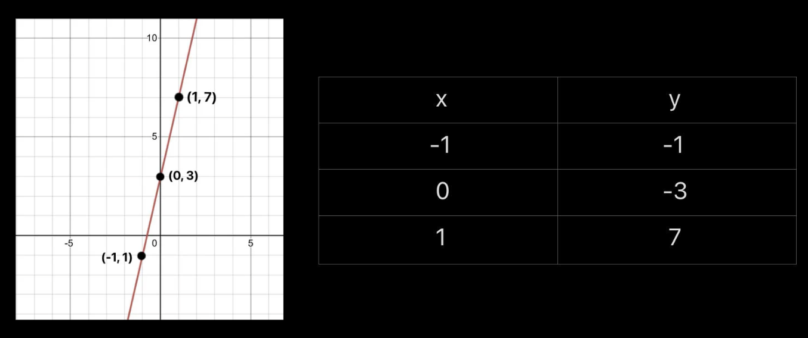
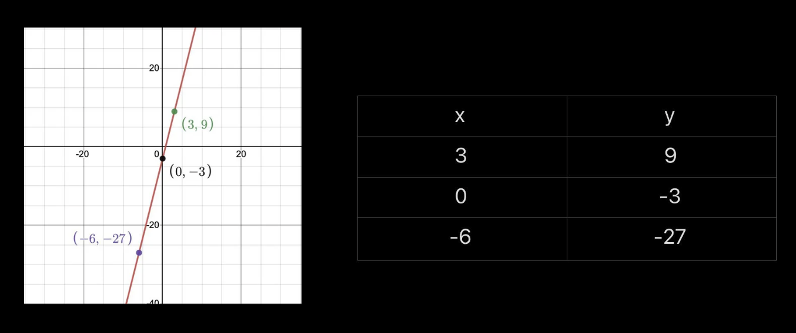
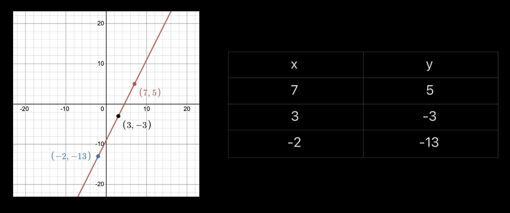

MATH-ICT Integrated Performance Task

John Miccoh Reyes
"Life is parang programming"

John Cyler Gutierrez
"Baliw sa school, mabait sa bahay"
Graph of Linear Function
Function is a type of relation that does not repeat any x values. Its examples are the Many-to-one and One-to-one correspondence. Meanwhile a Linear Function is a function and is also a Linear equation or a when graphed straight line and is defined by f(x)=mx+b where m(slope) and b(y intercept) are real numbers.
Example 1
Identify the slope and y intercept and also graph and produce an ordered pair out of the function shown below
F(x)= 4x + -3
Answer:
m = 4
y intercept = (0, -3)
By graphing the line, you will flip the way you use the slope and get 3 different points that lie on the same line, proving that it is a linear equation while also not contradicting the vertical line test proves that it is a linear function
Set - {(-1, -1), (0, 3), (1,7)}

Example 2
f(x)=4x-3 Determine the values of the function above if x = 3, 0, and -6 f(3)= 4x-3 = 4(3)-3 = 12 - 3 f(3)= 9 f(0)= 4x-3 = 4(0)-3 f(0)= -3 f(-6)= 4x-3 = 4(-6)- 3 = (-24) - 3 f(-6)= -27 If we transfer this to a table, it will result to the diagram below

Example 3
Here is the graph of the function f(x)= 2x-9 using its slope and y intercept
Slope = 2
y intercept = -9
(Photo of the graph using its slope)
Graphing the same function by using the table of values
f(x)= 2x-9
f(7)= 2x-9
= 2(7)-9
= 14-9
f(7)= 5
f(3)= 2x-9
= 2(3)-9
= 6-9
f(3)= -3
f(-2)= 2x-9
= 2(-2)-9
= (-4)-9
f(-2)= -13

Video